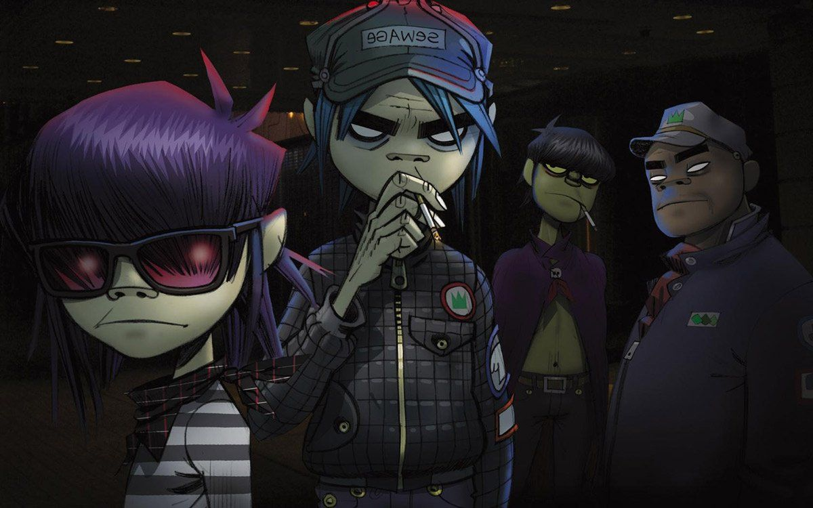

Gorillaz é uma banda virtual britânica criada por Damon Albarn e Jamie Hewlett em 1998. Misturando música, animação e uma identidade visual única, o grupo conquistou o mundo com seus personagens fictícios, videoclipes marcantes e uma sonoridade que passeia por diversos gêneros musicais. Muito além de uma banda, Gorillaz é um universo próprio.